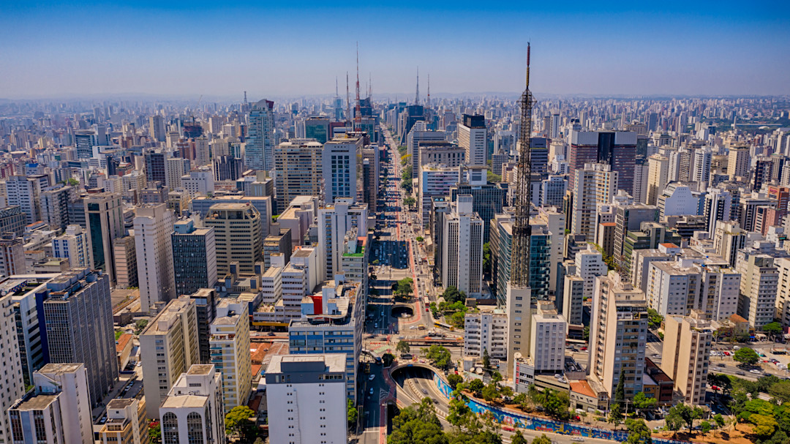
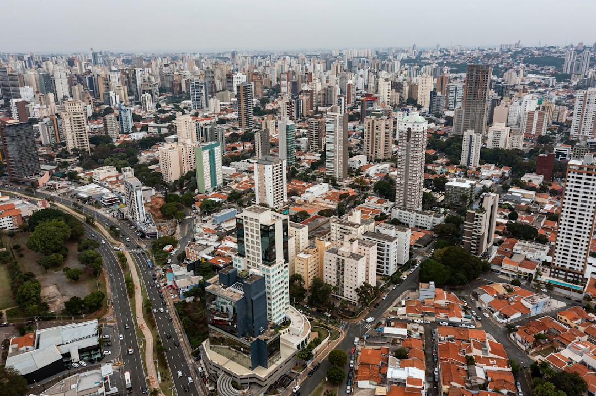
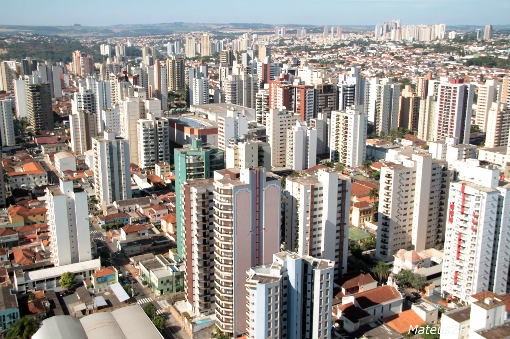
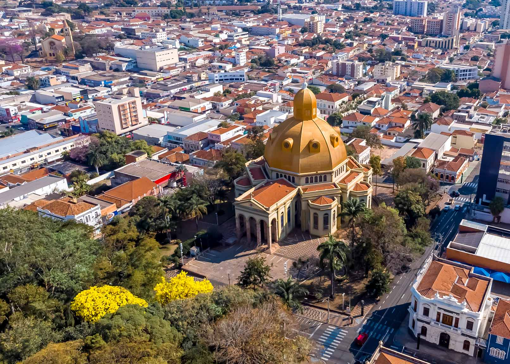
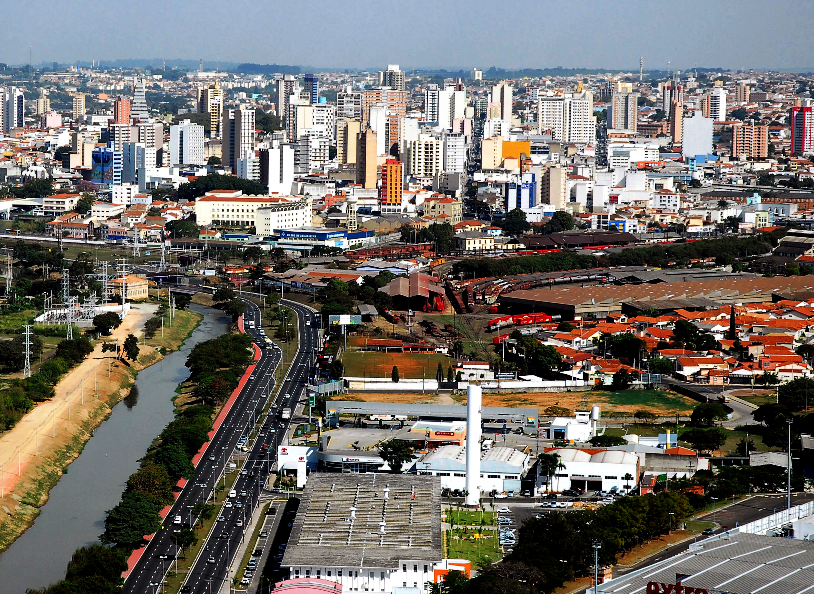
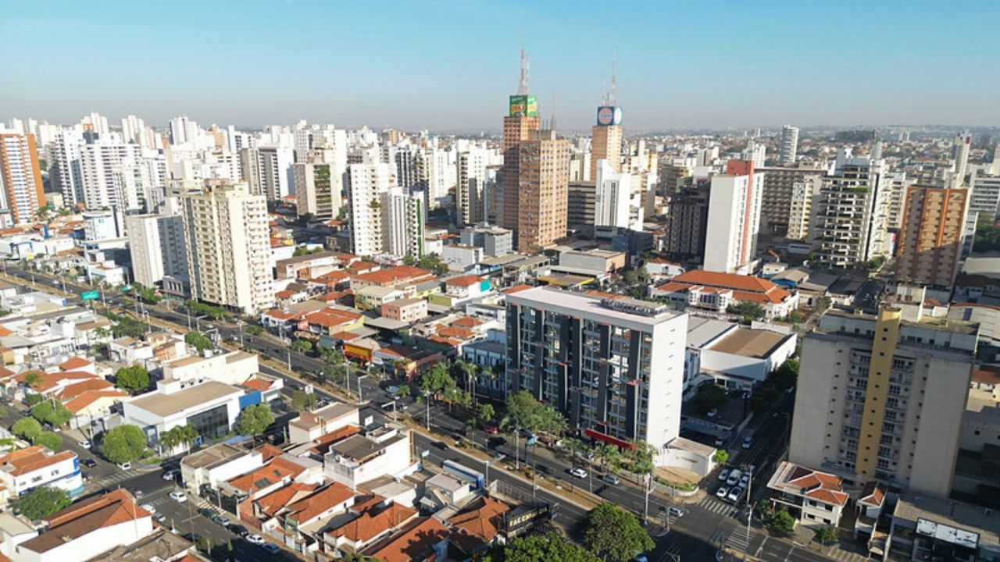
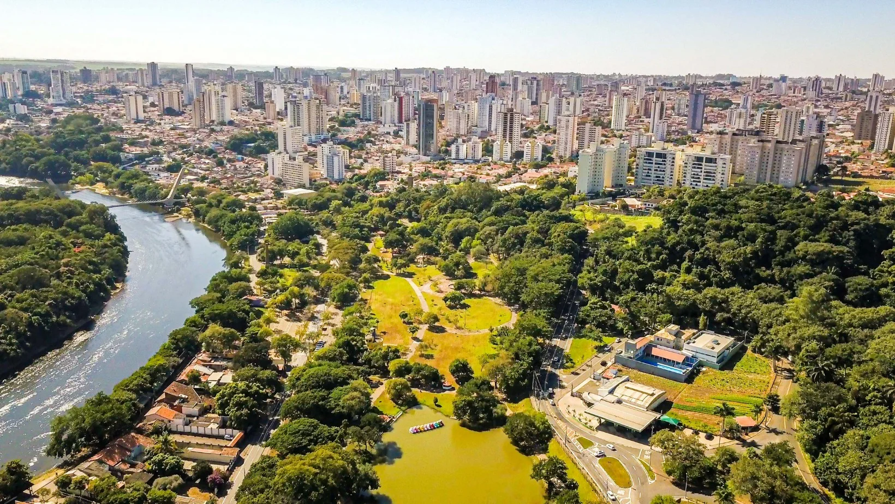
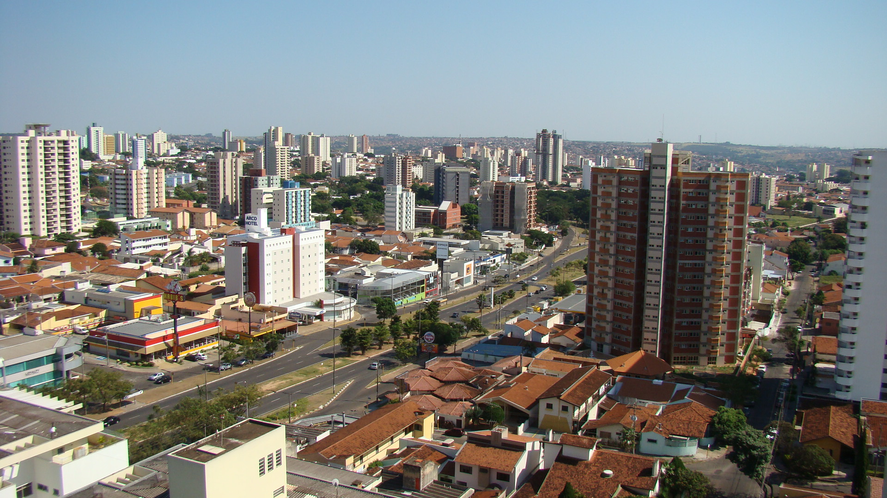

O estado de São Paulo consolida-se em 2026 como o principal motor de inovação da América Latina, abrigando ecossistemas que transcendem a simples infraestrutura industrial para se tornarem verdadeiras Smart Cities. Este desenvolvimento é impulsionado por uma combinação estratégica de políticas públicas de transformação digital, a presença de universidades de elite e um setor privado que investe massivamente em Pesquisa e Desenvolvimento (P&D). Cidades que antes eram conhecidas apenas pelo agronegócio ou manufatura pesada agora figuram em rankings globais de conectividade, liderando a implementação de redes 5G, governança orientada a dados e soluções de mobilidade sustentável.
A liderança tecnológica paulista é liderada pela capital, mas o fenômeno da "interiorização da inovação" redesenhou o mapa do estado. O chamado Quadrilátero de Inovação — que conecta as regiões de Campinas, São José dos Campos, Sorocaba e a Região Metropolitana de São Paulo — concentra a maior densidade de parques tecnológicos e incubadoras de startups do país. Segundo o ranking Connected Smart Cities 2025/2026, municípios como Barueri e Santos têm se destacado não apenas pela digitalização de serviços públicos, mas pela capacidade de atrair capital humano qualificado, transformando desafios urbanos em oportunidades para a economia criativa e tecnológica.
Explorar as 10 cidades mais tecnológicas de São Paulo é mergulhar em um cenário de contrastes produtivos, onde a robótica avançada de São José dos Campos convive com a biotecnologia de ponta em Campinas e a excelência em edtechs de Santana de Parnaíba. Esses centros urbanos não são apenas locais de produção, mas laboratórios vivos que testam o futuro da sociedade brasileira. Ao analisar cada um desses polos, percebe-se que a tecnologia no estado deixou de ser um setor isolado para se tornar o alicerce de uma gestão pública eficiente, focada em melhorar diretamente a qualidade de vida do cidadão e a sustentabilidade ambiental.
| Clique e confira as dez cidades mais tecnológicas do Estado de São Paulo: |
|---|
| São Paulo |
| Campinas |
| Ribeirão Preto |
| São José dos Campos |
| São Carlos |
| Sorocaba |
| Santos |
| São José do Rio Preto |
| Piracicaba |
| Bauru |

São Paulo é, de longe, a cidade com maior ecossistema de startups do estado de São Paulo, com 1.670 empresas inovadoras registradas no estudo do Sebrae — mais que o total das outras nove cidades do ranking juntas. Esse volume expressivo reflete sua posição como maior centro econômico e tecnológico do Brasil, com grande concentração de laboratórios, universidades e centros de pesquisa.
A metrópole paulista tem atraído investimentos tanto públicos quanto privados, e sua infraestrutura consolidada — desde incubadoras até grandes aceleradoras — impulsiona a criação e expansão de soluções tecnológicas em diversas áreas como saúde digital, fintechs e inteligência artificial. Além disso, sua força demográfica e mercado consumidor robusto fazem de São Paulo um ambiente fértil para negócios inovadores se desenvolverem rapidamente.
Como principal hub tecnológico do Brasil, São Paulo também se destaca em rankings globais de inovação: por exemplo, a cidade figura entre os maiores ecossistemas de startups do mundo, sendo a única da América Latina no Global Startup Ecosystem Report. Isso reforça sua importância não apenas no contexto estadual, mas também internacional.

Campinas aparece em segundo lugar no ranking com 174 startups, destacando-se como o principal polo tecnológico fora da capital. A cidade se beneficia da presença de instituições de ensino e pesquisa de alto nível, como a Universidade Estadual de Campinas (Unicamp), que gera talentos e impulsiona a criação de novas empresas tecnológicas.
Além disso, Campinas tem registrado forte crescimento em exposição internacional, sendo uma das cidades brasileiras que mais evoluiu em rankings globais de ecossistemas de startups. Sua atuação abrange setores como software, biotecnologia e tecnologia industrial, com o apoio de aceleradoras e ambientes de inovação que conectam empreendedores a mercados e investidores.
Investimentos públicos e privados continuam ampliando o ambiente empreendedor campineiro, reforçando a cidade como um polo tecnológico estratégico para o interior paulista. Sua proximidade com São Paulo capital também favorece sinergias entre empresas, universidades e centros de P&D.

Ribeirão Preto ocupa a terceira posição no ranking paulista com cerca de 150 startups, consolidando-se como um dos principais centros de inovação do interior do estado. A cidade tem investido em estruturas que favorecem a incubação e aceleração de empresas tecnológicas, além de contar com universidades e hospitais que fomentam pesquisas e spin-offs em áreas como saúde e agritech.
O setor agroindustrial de Ribeirão Preto também impulsiona a demanda por soluções tecnológicas, incentivando o surgimento de startups voltadas para agrotech, logística inteligente e automação. Essa convergência entre base produtiva e inovação tecnológica explica sua posição de destaque no ranking estadual.
Programas de capacitação e apoio ao empreendedorismo, promovidos por instituições locais e pelo setor público, têm contribuído para fortalecer o ecossistema tecnológico da cidade, atraindo talentos e investimentos à região.

São José dos Campos aparece com 126 startups no ranking, destacando-se por seu forte vínculo com a indústria aeroespacial e tecnológica. A presença de instituições renomadas como o Instituto Tecnológico de Aeronáutica (ITA) e grandes empresas como a Embraer é um diferencial para a criação de soluções inovadoras, especialmente em setores de alta tecnologia.
A cidade tem um ecossistema vibrante que combina pesquisa acadêmica e demandas industriais, criando oportunidades para startups em áreas como robótica, software avançado e biotecnologia. Rankings internacionais de ecossistemas de startups também reconhecem São José dos Campos por sua maturidade e potencial de crescimento.
Programas locais de incubação, como o Nexus do Parque Tecnológico, apoiam empreendedores em diferentes fases, contribuindo para o fortalecimento contínuo do setor tecnológico e sua integração com mercados nacionais e estrangeiros.

São Carlos ocupa a quinta posição no estado, com 99 startups destacadas no ranking paulista. Conhecida como “Capital da Tecnologia”, a cidade tem forte tradição em pesquisa e educação, abrigando importantes instituições como a Universidade de São Paulo (USP) e a Universidade Federal de São Carlos (UFSCar), que alimentam o ecossistema de inovação local.
Essas universidades colaboram para o surgimento de empresas de base tecnológica, especialmente nos setores de automação, engenharia e tecnologia da informação, consolidando São Carlos como um centro de excelência em ciência aplicada.
Além disso, ambientes de inovação e parcerias entre academia e indústria têm atraído recursos e talentos, reforçando a capacidade da cidade de gerar soluções tecnológicas e de competir com polos maiores.

Sorocaba aparece em sexto lugar com 87 startups, destacando-se pelo crescimento de iniciativas tecnológicas na região. A cidade tem investido em infraestrutura para inovação, como parques tecnológicos e programas de apoio a empreendedores, além de fortalecer conexões com universidades e centros de pesquisa.
O setor de tecnologia da informação, serviços digitais e soluções industriais tem ganhado espaço, atraindo empresas que buscam desenvolver produtos inovadores e competir em mercados dinâmicos.
Programas municipais e parcerias com organizações do ecossistema paulista também contribuem para ampliar o acesso a recursos e redes de apoio para startups locais.
Santos tem 85 startups no ranking estadual, destacando-se como o principal polo tecnológico da Baixada Santista. A cidade combina tradição em setores como logística e comércio com um ambiente crescente de inovação, fomentado por incubadoras e iniciativas de empreendedorismo.
A proximidade com centros acadêmicos e a dinâmica portuária oferecem oportunidades para soluções tecnológicas em logística inteligente, economia marítima e tecnologias ambientais, fortalecendo o ecossistema local.
Projetos colaborativos entre empresas, universidades e governo vêm ampliando a presença de tecnologia aplicada à economia da região, atraindo novos negócios e investimentos.

São José do Rio Preto aparece em oitavo lugar com 83 startups, demonstrando que cidades do interior paulista também têm capacidade de gerar inovação. A região tem apoiado o surgimento de empresas tecnológicas, especialmente em segmentos como saúde digital e agritech, aproveitando sua base produtiva diversificada.
Iniciativas locais de capacitação e parcerias com universidades e entidades de fomento contribuem para fortalecer o ecossistema inovador da cidade.
Esse ambiente crescente de tecnologia torna São José do Rio Preto uma cidade relevante para empreendedores que buscam desenvolver soluções voltadas tanto para o mercado regional quanto nacional.

Piracicaba, com 77 startups, ocupa a nona posição no ranking paulista. A cidade tem tradição em pesquisa ligada ao agronegócio, além de contar com polos tecnológicos e iniciativas que fortalecem startups, sobretudo nas áreas de agritech e tecnologia industrial.
Projetos que unem universidades, empresas e centros de inovação vêm ampliando a competitividade tecnológica da região, atraindo talentos e recursos para soluções de base científica.
Esses esforços consolidam Piracicaba como um centro tecnológico relevante dentro do interior paulista.

Bauru fecha a lista com 74 startups no estado, destacando-se pela diversificação do seu ambiente tecnológico. A cidade vem fortalecendo sua economia por meio de iniciativas que apoiam empreendedores e promovem inovação em diferentes setores, incluindo TI e serviços digitais.
Programas locais de suporte à inovação, em conjunto com universidades e centros de pesquisa regionais, têm contribuído para ampliar o perfil tecnológico da cidade e atrair novos negócios.
Os resultados mostram que a tecnologia e o empreendedorismo também ganham espaço em cidades de porte médio, ampliando o ecossistema tecnológico no estado de São Paulo.